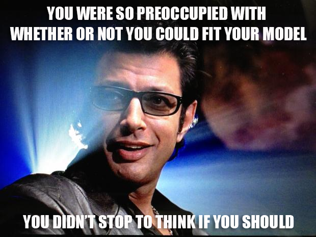

Probability Models for Data
Lecture 04
February 3, 2024
Review
Probability Fundamentals
- Bayesian vs. Frequentist Interpretations
- Distributions reflect assumptions on probability of data.
- Normal distributions: “least informative” distribution for a given mean/variance.
- Fit distributions by maximizing likelihood.
- Communicating uncertainty: confidence vs. credible vs. predictive intervals.
Model Formulation
Conceptual Process Model(s)
Candidate statistical relationships:
- Null w/ Trend (Time → EWL)
- Null (stationary EWL)
- PDO → EWL
- GMT → EWL
- PDO + GMT → EWL
You Can Always Fit Models…
Especially linear models with OLS!
But not all models are theoretically justifiablee.

How Do We Select Candidate Processes?

XKCD 2620
Source: XKCD 2620
Generative Model
The combination of a probability model plus a joint parameter distribution over all relevant parameters gives us a generative model.
We can estimate:
- Model-based forecasts;
- Causal effects;
- Counterfactuals.
Modeling Residuals
Observations are Noisy
- Imprecise measurements
- Biased samples
- Missing (unmodeled) mechanisms.
Think Generatively
Regressions model expectations (“regression to the mean”), not the data.
Adding an error model to the regression makes it generative.
\[ \begin{align*} y &\sim \beta_0 + \sum_i \beta_i x_i + \varepsilon \\ \varepsilon &\sim N(0, \sigma^2) \end{align*} \]
Source: Richard McElreath
Probability Models
Generative models allow us to write down a probability model for the data, e.g.
\[ \begin{align*} y &\sim \beta_0 + \sum_i \beta_i x_i + \varepsilon \\ \varepsilon &\sim N(0, \sigma^2) \\ \Rightarrow &\bbox[yellow, 10px, border:5px solid red] {y \sim \N(\beta_0 + \sum_i \beta_i x_i, \sigma^2)} \end{align*} \]
Model Residuals
Model Residuals are the “error” between the model simulations and the data.
\[\underbrace{\mathbf{r}}_{\text{residuals}} = \overbrace{F(\mathbf{x}; \theta)}^{model} - \underbrace{\mathbf{y}}_{\text{data}}\]
Upcoming Schedule
Next Classes
Wednesday: Bayesian Statistics
Next Week: Temporal and Spatial Models and Errors
Assessments
Homework 1 due Friday (2/7).